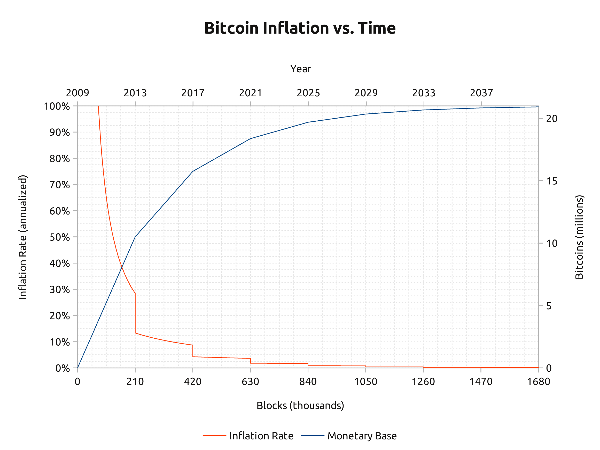

2 Une croissance conflictuelle
Après un début unifié autour de la figure de Satoshi Nakamoto entre 2009 et 2011, la communauté de Bitcoin s’est rapidement organisée sans sa médiation, de manière décentralisée. Gavin Andresen avait bien été nommé responsable du projet, mais il n’avait pas l’autorité morale suffisante pour imposer une vision claire de Bitcoin aux autres et préférait la conciliation. De ce fait, la communauté s’est retrouvée en proie à de multiples conflits internes, qui ont progressivement gagné en intensité avec l’afflux des nouveaux arrivants lors des différentes vagues spéculatives. La querelle entre les développeurs à propos de Pay to Script Hash début 2012 n’était ainsi que la préfiguration de divisions bien plus profondes.
Quatre évolutions majeures ont affecté l’écosystème de Bitcoin au cours de son histoire et ont mené à la création de clivages majeurs au sein de la communauté. Ces évolutions ont été : la financiarisation de l’économie, caractérisée par le développement des intermédiaires de confiance ; l’atteinte de la limite de capacité transactionnelle de la chaîne de blocs, ayant mis en évidence le manque de scalabilité du système (et donné lieu à la célèbre « guerre des blocs ») ; l’essor des cryptomonnaies alternatives, accueilli de façons très diverses par les utilisateurs de Bitcoin ; et l’intégration institutionnelle réalisée par les instances étatiques, posant la question du rapport à entretenir avec l’autorité.
Bitcoin a ainsi connu une croissance conflictuelle qui a forgé ce qu’il est devenu et la perception que nous en avons aujourd’hui. C’est pourquoi nous nous concentrerons sur ces quatre clivages dans ce chapitre.
La financiarisation
La financiarisation de Bitcoin se caractérise par une professionnalisation de l’activité d’échange entre le bitcoin et les monnaies étatiques, ce qu’on appelle formellement le change, et l’arrivée des acteurs traditionnels dans l’écosystème. Elle s’accompagne d’une croissance du prix sans précédent, d’une plus grande liquidité du marché, mais aussi d’un resserrement des contraintes réglementaires et d’une mutation du discours dominant au sein de la communauté.
Le besoin de disposer de services de change se fait ressentir très rapidement. En effet, de manière générale les gens possèdent, gagnent et dépensent de la monnaie fiat comme du dollar ou de l’euro, et non du bitcoin. Ainsi, même si Bitcoin est un système théoriquement indépendant du système traditionnel, il est essentiel qu’il existe des passerelles entre les deux univers, au moins de manière temporaire.
À partir de l’année 2011, on assiste de ce fait à un essor sans précédent des places de marché, des bourses en ligne traitant de manière automatisée les ordres d’achat et de vente des clients. C’est en particulier le cas de la plateforme Mt. Gox qui, malgré des débuts houleux, devient rapidement une véritable plaque tournante de la conversion entre bitcoins et dollars, recueillant un volume journalier d’au moins 200 000 $ et dépassant parfois le million de dollars. D’autres plateformes émergent comme Bitstamp, Bitcoin-Central, TradeHill ou BTC-e, mais elles ne parviennent pas à concurrencer Mt. Gox qui continuera de représenter 90 % du volume total échangé sur le marché durant le reste de son existence.
Outre les plateformes où la négociation se fait « au comptant » (les actifs réels sont échangés), on voit aussi apparaître des plateformes de trading sur marge qui permettent de négocier des contrats et ainsi de recourir à l’effet de levier (leverage) et de faire de la vente à découvert (short selling). La première d’entre elles est Bitcoinica, qui connaît une existence tumultueuse entre septembre 2011 et mai 20121, avant d’être remplacée par la plateforme Bitfinex, qui prend la relève en octobre 2012.
1 « Bitcoinica, qui connaît une existence tumultueuse entre septembre 2011 et mai 2012 » : Ludovic Lars, L’affaire Bitcoinica : le succès et la chute de la plateforme de trading, 17 octobre 2020, https://journalducoin.com/analyses/affaire-bitcoinica-succes-chute-plateforme-trading-bitcoin/.
2 Colleen Taylor, « With $1.5M Led By Winklevoss Capital, BitInstant Aims To Be The Go-To Site To Buy And Sell Bitcoins », TechCrunch, 17 mai 2013 : https://techcrunch.com/2013/05/17/with-1-5m-led-by-winklevoss-capital-bitinstant-aims-to-be-the-go-to-site-to-buy-and-sell-bitcoins/.
En parallèle se développe un service nommé BitInstant aux États-Unis, cofondé en juin 2011 par Gareth Nelson et Charlie Shrem, dont le rôle est de faciliter les transferts vers et depuis les plateformes de change. L’entreprise sert d’intermédiaire entre les clients et les plateformes et permet de rendre les dépôts (et les retraits) instantanés moyennant une commission. Charlie Shrem, jeune New-Yorkais d’origine juive syrienne, assure le rôle de PDG et devient rapidement la figure principale de l’entreprise, bien que d’autres personnes soient impliquées dans le projet comme Roger Ver et Erik Voorhees. Dès le début de l’année 2012, BitInstant propose diverses méthodes de transfert d’argent (Liberty Reserve, Dwolla, Paxum, dépôts d’espèces, ) pour interagir avec les principales plateformes de l’écosystème, dont notamment Mt. Gox qui est basée au Japon. En avril 2013, l’activité de BitInstant finira par représenter environ 30 % du volume total échangé sur les plateformes de change2.
Mais les places de marché ne sont pas les seules à fleurir. Premièrement, on constate un développement des applications dépositaires, qui permettent d’envoyer et de recevoir facilement des bitcoins sans devoir en gérer la détention soi-même, dont MyBitcoin était le précurseur entre 2010 et 2011. C’est le cas de Coinbase, fondé en mai 2012 par Brian Armstrong et Fred Ehrsam, qui se développe initialement comme un « portefeuille Bitcoin hébergé3 ». Coinbase intégrera progressivement les fonctionnalités d’une plateforme de change classique au fil des années.
3 Capture du site web Coinbase.com, 20 septembre 2012 : https://web.archive.org/web/20120920091115/https://coinbase.com/.
Deuxièmement, on voit apparaître des processeurs de paiements qui donnent aux commerçants la possibilité de recevoir des bitcoins et de les revendre instantanément pour échapper à la volatilité. L’exemple par excellence de ce type de service est BitPay, un processeur de paiement fondé en mai 2011 par Tony Gallippi et Stephen Pair qui deviendra rapidement la solution de facilité pour de nombreux commerçants.
Troisièmement, les services de change de particulier à particulier se multiplient également. Ceux-ci permettent à deux individus d’échanger du bitcoin via divers moyens de paiement, dont notamment l’échange en personne contre des espèces. La plus connue est la plateforme LocalBitcoins, qui est fondée en juin 2012 par Jeremias Kangas et qui inspirera les autres plateformes du même type. Dans le même esprit, il existe également les marchés de gré à gré (over the counter) par lesquels les plus fortunés peuvent procéder à des échanges importants entre eux, en privé, sans affecter instantanément le cours sur les places de marché.
Ainsi, l’offre de services financiers se développe considérablement entre 2012 et 2013. Cela s’explique par une forte demande de la part des clients de plus en plus désireux de se procurer du bitcoin. Cette demande s’illustre par l’apparition de la cryptomonnaie dans la culture populaire, réellement inaugurée par l’épisode de The Good Wife diffusé le 15 janvier 2012 aux États-Unis qui est consacré entièrement à Bitcoin4.
4 The Good Wife, 3x13 : « Bitcoin for Dummies », 15 janvier 2012.
En particulier, l’intérêt des acteurs du monde financier traditionnel fait la différence. On assiste en effet à la venue d’investisseurs très fortunés qui s’intéressent au bitcoin, en raison de son offre limitée (la fameuse limite des 21 millions) et par son potentiel technologiquement disruptif. Ils placent leur argent non seulement dans le bitcoin, mais aussi dans les entreprises de l’écosystème.
C’est d’abord le cas de Barry Silbert, un afficionado de Wall Street ayant fait fortune grâce à SecondMarket, une société facilitant la négociation d’actifs sur le marché secondaire. Il s’intéresse au bitcoin en 2012 et en achète pour des centaines de milliers de dollars. Il sera à l’origine de la création de Grayscale Investments en 2013 et du Digital Currency Group en 2015.
C’est aussi le cas des frères Tyler et Cameron Winklevoss, qui sont connus pour leur différend avec Mark Zuckerberg concernant la création de Facebook et pour avoir été dédommagés de 65 millions de dollars dans cette affaire. Les jumeaux apprennent l’existence de Bitcoin en août 2012 par le biais de David Azar, un associé de Charlie Shrem. Puis ils rencontrent ce dernier, qui les convainc d’investir dans le bitcoin. Ils finissent également par investir dans sa société BitInstant en mai 2013. Ils seront plus tard à l’origine de la plateforme de change Gemini.
On peut enfin citer l’entrepreneur et philanthrope argentin Wences Casares, qui achète du bitcoin en février 2013. Il fondera sa propre société dans le milieu, Xapo, qui est aujourd’hui l’un des plus importants dépositaires de bitcoin au monde pour les particuliers.
Cette financiarisation apporte ainsi un afflux considérable d’argent, mais elle s’accompagne aussi d’un changement de discours. Grâce à sa politique monétaire fixe, le bitcoin est désormais de plus en plus perçu comme un investissement, comme un actif apportant un profit dû à la croissance de son économie. De ce fait, on le voit de moins en moins comme une monnaie permettant d’échanger de la valeur entre particuliers sans l’intervention des banques ou des États.
Contrairement aux cypherpunks et aux libertariens, les nouveaux investisseurs ne sont en effet pas vraiment des anarchistes, appartenant généralement au monde financier traditionnel très à cheval sur la réglementation. Pour eux, il est nécessaire que les usages les plus controversés disparaissent afin que Bitcoin se développe et s’étende au grand public et aux investisseurs institutionnels. Ils voient en particulier d’un mauvais œil la place de marché Silk Road, qui représente alors 10 à 20 % de l’activité économique sur la chaîne de blocs5 et qui donne à Bitcoin sa réputation de monnaie de la drogue sur Internet6. La tendance est donc à l’amélioration de l’image de la cryptomonnaie, une stratégie par ailleurs initiée en 2010 – 2011 par Satoshi Nakamoto lui-même, comme nous avons pu le constater dans le chapitre 1.
5 « la place de marché Silk Road, qui représente alors 10 à 20 % de l’activité économique sur la chaîne de blocs » : Chainalysis in Action: US Government Agencies Seize More Than $1 Billion in Cryptocurrency Connected to Infamous Darknet Market Silk Road, 5 novembre 2020 : https://blog.chainalysis.com/reports/silk-road-doj-seizure-november-2020/.
6 Cette animosité à l’égard de Silk Road s’est retrouvée dans le commentaire de Tyler Winklevoss quelques semaines après la chute de la plateforme : « Les prix sont le double de ce qu’ils étaient avant la fermeture de Silk Road. La demande d’utilisation de bitcoins pour des activités illicites était donc clairement quasi nulle. » – Matthew J. Belvedere, « Bitcoin is nearly halfway to the $400 billion value predicted by the Winklevoss twins four years ago », CNBC, 12 novembre 2013 : https://www.cnbc.com/2013/11/12/the-winklevoss-brothers-bitcoin-worth-100-times-more.html.
7 « est créée la Fondation Bitcoin en septembre 2012 » : Gavin Andresen, [ANN] Bitcoin Foundation, /09/2012 10:18:51 UTC : https://bitcointalk.org/index.php?topic=113400.msg1224721#msg1224721.
8 Bitcoin Foundation, Developing a More Open Economy : https://web.archive.org/web/20130702232207/https://bitcoinfoundation.org/about/.
C’est dans cette optique qu’est créée la Fondation Bitcoin en septembre 20127. Conformément au modèle de la Fondation Linux, il s’agit d’un consortium d’entreprises de l’écosystème dont le rôle est de financer l’infrastructure logicielle du protocole, de faire du lobbying auprès du régulateur et d’améliorer l’image publique de Bitcoin8. Elle est gérée par des acteurs importants dans l’écosystème : Peter Vessenes, le PDG de CoinLab, Gavin Andresen, le mainteneur principal du logiciel de Bitcoin, Mark Karpelès, le PDG de Mt. Gox, Jon Matonis, cryptographe et économiste, Patrick Murck, un juriste spécialisé dans les monnaies virtuelles, et Charlie Shrem, le PDG de BitInstant.
Le 28 novembre 2012, le premier halving se produit : la création monétaire du protocole est réduite de moitié et passe de 50 bitcoins à 25 bitcoins par bloc, ce qui abaisse le taux annualisé d’émission à 12,5 %. La transition se passe parfaitement bien. Quelques jours plus tard, un dénommé Matt Whitlock construit un graphique simple pour visualiser l’évolution de la création de bitcoins dans le temps9 (voir figure 2.1). Cela confirme le changement de focalisation qui passe de son caractère incensurable à sa rareté.
9 Matt Whitlock, [CHART] Bitcoin Inflation vs. Time, /12/2012 15:08:08 UTC : https://bitcointalk.org/index.php?topic=130619.msg1397456#msg1397456.

L’augmentation de la demande et la diminution du taux de croissance de l’offre entraînent une hausse sensible du prix du bitcoin. Alors qu’il avoisinait les 5 $ durant la première partie de 2012, il passe à 13 $ en août et se stabilise à ce niveau jusqu’à la fin de l’année. En 2013, sa progression devient parabolique : il dépasse les 20 $ en janvier ; il surmonte l’ancien plus haut des 30 $ en février ; et il finit par atteindre 266 $ sur Mt. Gox en avril.
De façon assez symbolique, un évènement coïncide avec cette hausse : la faillite des banques chypriotes. À cette époque, la crise financière bat son plein sur l’île de Chypre, ce qui pousse le système financier à prendre des mesures drastiques. Le 16 mars 2013, les banques limitent les retraits des comptes de leurs clients. Le 25, le gouvernement chypriote et l’UE décident (sans cadre légal préalable) que la Bank of Cyprus doit être renflouée de manière interne, via une taxation partielle des dépôts de plus de 100 000 euros. La Laiki Bank, deuxième banque du pays, est démantelée suite à sa faillite et les avoirs supérieurs à 100 000 euros sont tout simplement confisqués. Cet évènement vient démontrer l’utilité du bitcoin, cet « or numérique » que l’on peut posséder directement et qui n’est pas soumis aux contraintes des banques à réserves fractionnaires10.
10 À cette occasion, GoldMoney et Bitcoin Magazine ont co-produit un documentaire, intitulé Cyprus: A Wake Up Call, qui recueillait les témoignages des chypriotes touchés par cette crise. Voir sur Youtube : https://www.youtube.com/watch?v=mGGlYnxSFWM.
11 « injonctions des sénateurs Chuck Schumer et Joe Manchin appelant à fermer la plateforme » : Joe Manchin, Manchin Urges Federal Law Enforcement to Shut Down Online Black Market for Illegal Drugs, 6 juin 2011 : https://www.manchin.senate.gov/newsroom/press-releases/manchin-urges-federal-law-enforcement-to-shut-down-online-black-market-for-illegal-drugs.
12 Deux agents corrompus du FBI ont notamment profité de l’enquête pour subtiliser plus de 20 000 bitcoins (soit environ 350 000 $) et pour simuler un assassinat. – Ludovic Lars, « Meurtres, escroqueries et vol de bitcoins - Le côté obscur de Silk Road », Le Journal du Coin, 27 juin 2021 : https://journalducoin.com/analyses/cote-obscur-silk-road/.
13 « C’est Gary Alford [...] qui débusque la piste » : Nathaniel Popper, The Unsung Tax Agent Who Put a Face on the Silk Road, 25 décembre 2015 : https://www.nytimes.com/2015/12/27/business/dealbook/the-unsung-tax-agent-who-put-a-face-on-the-silk-road.html.
14 « le serveur de Silk Road est saisi par la police islandaise » : https://antilop.cc/sr/files/2014_09_05_Declaration_of_Tarbell.pdf#page=5.
Du côté de Silk Road, les choses évoluent également. L’enquête des services de renseignement étasuniens, qui a débuté en juin 2011 suite à la publication de l’article d’Adrien Chen sur Gawker et aux injonctions des sénateurs Chuck Schumer et Joe Manchin appelant à fermer la plateforme11, commence à porter ses fruits. Après de longues recherches et quelques actions litigieuses de la part des enquêteurs12, le fondateur de la plateforme, Ross Ulbricht, finit par être suspecté en juin 2013. C’est Gary Alford, un agent de l’Internal Revenue Service (le fisc étasunien), qui débusque la piste en retrouvant l’annonce initiale de Ross sur le forum de Bitcoin et en la liant à son adresse de courriel, où figure son nom civil13. En juillet 2013, le serveur de Silk Road est saisi par la police islandaise et une copie est partagée aux agences étasuniennes14. L’historique contient une connexion depuis une adresse IP située à San Francisco, non loin d’où loge le jeune Texan. En septembre, grâce à cette information, Ross est démasqué.
La chute de Silk Road a lieu au début de l’automne 2013. Le 1 octobre, Ross Ulbricht est maîtrisé par des agents du FBI dans une bibliothèque de San Francisco, avec sa session ouverte sur la plateforme. Le lendemain, le site web est fermé, ce qui provoque l’émoi dans la communauté. Le cours du bitcoin, qui se stabilisait autour des 125 $ lors des jours précédents, chute brutalement pour toucher un niveau bas de 85 $. Entre le 2 et le 25 octobre, près de 174 000 bitcoins appartenant à Ross sont saisis par les agences fédérales, un trésor qui représente alors environ 31 millions de dollars15.
15 29 656,52080180 BTC ont été envoyés à l’adresse entre le 2 et le 16 octobre, tandis que 144 336,39429472 BTC ont été transférés vers l'adresse le 25 octobre. – U.S. Attorney’s Office, Southern District of New York, Manhattan U.S. Attorney Announces Seizure of Additional $28 Million Worth of Bitcoins Belonging to Ross William Ulbricht, Alleged Owner and Operator of “Silk Road” Website, 25 octobre 2013 : https://www.justice.gov/usao-sdny/pr/manhattan-us-attorney-announces-seizure-additional-28-million-worth-bitcoins-belonging.
16 Lors du procès, la juge Katherine Forrest a affirmé : « Je rends ce jugement en ayant à l’esprit les crimes que vous avez commis et la nécessité de vous infliger la peine la plus sévère possible. Il ne doit faire aucun doute que le non-respect de la loi ne sera pas toléré. Il ne doit faire aucun doute que personne n’est au-dessus de la loi, quels que soient son éducation ou ses privilèges. » – Ross Ulbricht’s sentencing transcript, 4 février 2015 : https://freeross.org/wp-content/uploads/2018/02/Doc_36_Jan_12_Vol_VI_Appendix_A1314-A1554.pdf#page=240.
D’autres personnes liées à Silk Road seront arrêtées et condamnées au cours des années suivantes. Ce sera le cas de Charlie Shrem qui sera interpellé le 27 janvier 2014 par des agents fédéraux (FBI, IRS, DEA) et accusé de facilitation de blanchiment d’argent avec sa société BitInstant. En décembre 2014, il sera condamné à deux ans de prison ferme pour transferts illicites. Ross Ulbricht sera lui condamné à deux peines de réclusion à vie et à 40 ans d’enfermement supplémentaires, pour des charges exclusivement non violentes, dans le but explicite d’en faire un exemple16.
Bien que la chute de Silk Road représente la destruction d’un pan entier de l’économie de Bitcoin, le cours remonte, conformément aux attentes de certains investisseurs importants. L’engouement pour Bitcoin réapparaît, ce qui provoque une nouvelle flambée du prix qui atteint de nouveaux sommets. Celui-ci, s’étant alors stabilisé au-dessus des 100 $, augmente timidement durant la deuxième moitié d’octobre et dépasse, début novembre, son ancien sommet de 266 $. À partir de là, il monte en flèche et atteint, le 4 décembre 2013, un nouveau plus haut niveau historique sur Mt. Gox à 1 240 $. Cet épisode spéculatif pousse alors beaucoup de médias à parler de Bitcoin pour la première fois.
Cependant, la plateforme Mt. Gox, sur laquelle repose l’essentiel de l’activité spéculative, est beaucoup plus fragile qu’elle ne le paraît. En effet, celle-ci a subi des attaques informatiques tout au long de son existence, entraînant la disparition progressive des fonds. Au début de l’année 2014, il s’avère qu’il manque plus de 650 000 bitcoins dans les caisses de la société, ce qui représente 381 millions de dollars à ce moment-là17 !
17 Kim Nilsson, The missing MtGox bitcoins, 19 avril 2015 : https://blog.wizsec.jp/2015/04/the-missing-mtgox-bitcoins.html
18 « Mark Karpelès présente ses excuses publiques devant les télévisions japonaises » : https://www.youtube.com/watch?v=NeuCuM9CkBc
En février 2014, la plateforme Mt. Gox chute. Après avoir suspendu les retraits le 7, le site est mis hors ligne le 25, et la faillite est déclarée le 28. Mark Karpelès présente ses excuses publiques devant les télévisions japonaises18. Cette crise est un cataclysme pour Bitcoin : la principale plaque tournante de l’économie ferme ses portes, les détenteurs fortunés qui conservaient leurs bitcoins sur la plateforme perdent tout et la confiance du grand public (qui assimile Bitcoin à Mt. Gox) s’effondre. Cela met fin à l’engouement spéculatif de 2013–2014.
Mark Karpelès est suspecté de détournement de fonds et sa réputation est ternie. Il sera arrêté par la justice japonaise en août 2015, ce qui lui vaudra d’être surnommé le « baron du bitcoin » par les médias français19. Plus tard, il sera montré que les pertes de la plateforme provenaient de plusieurs piratages ayant eu lieu entre 2011 et 2014, et que Mark Karpelès était seulement coupable de négligence et n’avait pas connaissance de la faille qui a permis de retirer la grosse part des bitcoins entre 2011 et 2014.
19 « ce qui lui vaudra d’être surnommé le "baron du bitcoin" par les médias français » : Pierre Alonso, En France, le passé trouble de l’ancien « baron du bitcoin », 29 juillet 2014 : https://www.lemonde.fr/pixels/article/2014/08/01/en-france-le-passe-trouble-de-l-ancien-baron-du-bitcoin_4464044_4408996.html.
Néanmoins, cette chute de Mt. Gox aura pour effet d’assainir le marché des plateformes de change. Dorénavant, elles se partageront le marché de manière plus équitable et l’activité se répartira entre des acteurs comme Bitfinex, bitFlyer, Bitstamp, Bittrex, BTCChina, BTC-e, Coinbase, Gemini, OKEx, Kraken ou encore Poloniex.
Le débat sur la scalabilité
La deuxième péripétie qui marque l’histoire de Bitcoin est le débat sur la scalabilité, qui porte sur la capacité du système à passer à l’échelle, c’est-à-dire à continuer de fonctionner de manière équivalente à mesure que le nombre d’utilisateurs augmente. Cette discorde s’amorce au cours de l’année 2013, qui est caractérisée par une forte hausse du prix et de l’activité. Elle dégénère ensuite en une guerre civile en 2015, pour se conclure en 2017 par le schisme en deux communautés distinctes suite à la création d’un nouveau réseau nommé Bitcoin Cash et à l’annulation du projet (artificiel) de compromis SegWit2X. La période constitue une phase d’apprentissage majeure pour la communauté. D’une part, cette dernière prend conscience des imperfections de Bitcoin, qui avait été jusque-là vanté comme un système de monnaie numérique dépourvu d’autorité centrale permettant d’envoyer des paiements instantanés à n’importe qui, n’importe où dans le monde et quasiment sans frais20. D’autre part, la communauté se rend compte du mécanisme de gouvernance qui sous-tend l’évolution du protocole, plus complexe qu’elle n’en a l’air (voir ch. 10 et 11).
20 Le 18 mai, la page d’accueil de Bitcoin.org présentait Bitcoin comme un système de monnaie numérique permettant de réaliser des « transactions instantanées de pair à pair [...] dans le monde entier » moyennant des « frais de traitement faibles ou nuls », en précisant que « la gestion des transactions et l’émission des bitcoins sont effectuées collectivement par le réseau ». – https://web.archive.org/web/20130518024528/http://bitcoin.org/en/.
Le débat sur la scalabilité se concentre sur un paramètre présent dans le protocole qui restreint la capacité transactionnelle du système : la limite de la taille des blocs ou blocksize limit. Puisque dans Bitcoin, les transactions sont incluses dans des blocs qui sont ajoutés à la chaîne toutes les 10 minutes en moyenne, limiter la taille de ces blocs revient en effet à instaurer un quota sur le nombre de transactions confirmées.
En 2013, la taille limite est de 1 mégaoctet (1 Mo), ce qui correspond à un flux théorique maximal de 7,37 transactions par seconde. Ajoutée dans le protocole par Satoshi Nakamoto le 12 septembre 2010 sans annonce publique de sa part, cette limite avait initialement pour rôle d’empêcher les attaques par déni de service et devait être augmentée au fil du temps21. Néanmoins, après la disparition précipitée du fondateur, la décision a été laissée aux membres de la communauté, ce qui a préparé le terrain pour le conflit.
21 Le 4 octobre 2010, Satoshi décrivait sur le forum comment mettre en œuvre une augmentation de la taille limite des blocs. – Satoshi Nakamoto, Re: [PATCH] increase block size limit, /10/2010 19:48:40 UTC, https://bitcointalk.org/index.php?topic=1347.msg15366#msg15366).
Dans le débat, deux camps principaux se font face. Le premier est celui des partisans des gros blocs, ou big blockers, qui se réclament du projet initial de Satoshi, et qui désirent réaliser des mises à niveau pour accroître la limite, voire la supprimer. Le camp opposé est celui des partisans des petits blocs, ou small blockers, qui souhaitent restreindre la taille des blocs, afin de minimiser le coût de gestion d’un nœud.
La première vision, qui est au départ majoritaire, considère que l’augmentation progressive de la taille limite des blocs peut être réalisée sans mettre en danger l’intégrité du système. Cette vision estime que Bitcoin devrait rester un protocole de paiement, qui s’adapte à la demande sans hausse des frais de transactions. Elle favorise de ce fait la facilité d’utilisation par rapport à la sécurité. Elle accepte le recours aux hard forks, mises à niveau incompatibles du protocole qui demandent la coordination de tous les membres du réseau pour être réalisées proprement. Il s’agit d’une position plutôt progressiste. De plus, ses partisans jugent généralement que la détermination du protocole est assurée par les mineurs. Cette approche est notamment portée par les développeurs Gavin Andresen, Mike Hearn et Jeff Garzik.
La seconde vision, qui se développe à partir de 2013, se concentre sur la sécurité aux dépens de la facilité d’utilisation. Son but est de minimiser le coût de gestion d’un nœud afin de maximiser la décentralisation du réseau. Cette vision considère que Bitcoin doit être principalement un protocole de règlement, servant de base à des systèmes en surcouche, qui peuvent être centralisés ou décentralisés. Elle prône l’utilisation de soft forks, des mises à niveau du protocole rendues rétrocompatibles grâce à l’action des mineurs, et qui peuvent donc être adoptées progressivement par les utilisateurs. Il s’agit d’une position plutôt conservatrice, même si elle admet l’intervention de certains changements essentiels. En outre, ses partisans considèrent généralement que l’intégrité du protocole provient des utilisateurs. Cette approche est notamment soutenue par les développeurs Pieter Wuille, Gregory Maxwell, Wladimir van der Laan et luke-jr.
Dans ces deux camps, il existe des nuances et des contradictions. Le sujet de la scalabilité étant complexe et technique, toutes sortes de positions émergent, notamment sur le niveau auquel devrait être fixé la limite de la taille des blocs : 1 Mo, 2 Mo, 8 Mo ?
L’opposition entre les deux tendances se manifeste tout d’abord au sein du projet logiciel de Bitcoin, dont les contributeurs principaux sont majoritairement des partisans des petits blocs. Durant le printemps 2014, le logiciel connaît ainsi un tournant majeur. Au niveau de la forme d’abord, il est renommé « Bitcoin Core » le 19 mars dans le but de « réduire la confusion entre Bitcoin-le-réseau et Bitcoin-le-logiciel22 ». Puis en ce qui concerne le fond, le dépôt GitHub subit une passation de pouvoir le 7 avril lorsque Gavin Andresen cède son poste de mainteneur principal à Wladimir van der Laan, pour se consacrer à ses activités de scientifique en chef de la Fondation Bitcoin.
22 Bitcoin Core, Bitcoin Core version 0.9.0 released, 19 mars 2014 : https://bitcoin.org/en/release/v0.9.0#rebranding-to-bitcoin-core.
23 « Mike Hearn voit sa proposition d’ajout de la requête de réseau getutxos être rejetée pour cause de non-unanimité dans l’équipe de Bitcoin Core » : https://github.com/bitcoin/bitcoin/commit/70352e11c0194fe4e71efea06220544749f4cd64.
24 « il est contraint de créer Bitcoin XT en décembre 2014 » : Mike Hearn, [Bitcoin-development] Bitcoin XT, /12/2014 18:04:08 UTC : https://lists.linuxfoundation.org/pipermail/bitcoin-dev/2014-December/007057.html.
Ce changement de gestion se matérialise dans l’année, lorsque Mike Hearn voit sa proposition d’ajout de la requête de réseau `` être rejetée pour cause de non-unanimité dans l’équipe de Bitcoin Core23. L’ingénieur a besoin de cette fonctionnalité pour le développement de son application de financement participatif, Lighthouse. De ce fait, il est contraint de créer Bitcoin XT en décembre 2014, une implémentation alternative issue de Bitcoin Core qui inclut les changements désirés mais qui reste compatible avec le réseau24.
Simultanément, la discorde s’étend à l’ensemble de la communauté. La logique des petits blocs se diffuse en particulier grâce à une vidéo produite par le développeur Peter Todd en 2013, qui explique « pourquoi la taille limite des blocs permet à Bitcoin de rester libre et décentralisé25 ». Un autre argument invoqué est celui du marché des frais, notamment mis en valeur par l’économiste français Nicolas Houy, qui explique dans un article de 2014 que « laisser les frais de transaction résulter d’un marché et rendre la taille des blocs non pertinente ou non contraignante conduirait à un niveau de sécurité trop faible pour Bitcoin26 ». Enfin, les partisans des petits blocs cherchent à justifier leur point de vue en proposant des solutions de passage à l’échelle, permettant d’accroître l’activité économique soutenue par le réseau sans pour autant augmenter significativement la taille des blocs.
25 Keep Bitcoin Free, Why the blocksize limit keeps Bitcoin free and decentralized (vidéo), 17 mai 2013 : https://www.youtube.com/watch?v=cZp7UGgBR0I.
26 Nicolas Houy, The economics of Bitcoin transaction fees, GATE, 2014. – Cette idée, appelée la « spirale fatale des frais », avait été proposée dès 2011 par un utilisateur sur Bitcointalk. Voir Vandroiy, [If tx limit is removed] Disturbingly low future difficulty equilibrium, 22 avril 2011 : https://bitcointalk.org/index.php?topic=6284.msg92187#msg92187.
27 Blockstream, Why We Founded Blockstream, 22 octobre 2014 : https://web.archive.org/web/20161022162335/https://www.blockstream.com/2014/10/23/why-we-are-co-founders-of-blockstream.html.
La première est la proposition des chaînes latérales, ou pegged sidechains, qui sont des chaînes secondaires fonctionnant en parallèle de la chaîne principale, vers et depuis lesquelles des bitcoins peuvent être transférés grâce à un ancrage bilatéral. Cette proposition est présentée pour la première fois dans un document technique le 22 octobre 2014 par les développeurs de l’entreprise Blockstream. Co-fondée par Adam Back, des développeurs de Bitcoin Core et des personnalités de la finance, cette société dont la création est annoncée le même jour a pour but de « trouver une manière d’étendre l’utilisation de Bitcoin, qui soit architecturalement solide et qui ne nécessite pas d’autorisation, pour que la cryptomonnaie atteigne son plein potentiel27 ». Elle se focalisera dans un premier temps sur le développement des sidechains, ce qui donnera naissance au modèle Elements et à sa mise en œuvre, Liquid.
La seconde proposition est celle du réseau Lightning, ou Lightning Network, un réseau de canaux de paiements bâti en surcouche de Bitcoin permettant d’effectuer des transferts instantanés et quasi-gratuits de pair à pair. Le concept est présenté en février 2015 par Joseph Poon et Thaddeus Dryja lors d’un séminaire de développeurs à San Francisco. Le 28 février, ils publient le livre blanc de leur invention, qui est intitulé « The Bitcoin Lightning Network » et qui présente les éléments de base nécessaires pour construire un tel réseau28. En particulier, une implémentation fluide de Lightning demande de modifier le protocole Bitcoin par l’ajout de verrous temporels dans le langage de script et par la correction d’un défaut appelé la malléabilité des transactions29.
28 Joseph Poon et Thaddeus Dryja, The Bitcoin Lightning Network DRAFT Version 0.5, 28 février 2015 : https://lightning.network/lightning-network-paper-DRAFT-0.5.pdf.
29 La malléabilité des transactions est la possibilité de modifier légèrement une transaction après sa diffusion sur le réseau, de façon à changer son identifiant. Cette capacité disparaît cependant une fois que la transaction a été confirmée par un mineur qui l’a incluse dans un bloc de la chaîne.
Ces deux propositions font envisager un passage à l’échelle par surcouche, qui ne nécessiterait pas de s’en remettre totalement à un tiers de confiance et qui ne compromettrait pas la sécurité de la chaîne toute entière.
Du côté des partisans des gros blocs, on se concentre surtout sur l’optimisation du logiciel et du protocole afin d’alléger la charge des nœuds. Ainsi, le 6 octobre 2014, Gavin Andresen publie une feuille de route sur le blog de la Fondation Bitcoin dans laquelle il décrit la façon dont les effets de l’augmentation de l’activité du réseau pourraient être compensés par des changements du protocole et par l’évolution exponentielle de la technique décrite par les lois de Moore et de Nielsen30. L’article mentionne notamment l’élagage des blocs les plus anciens (block pruning) qui permettrait de diminuer la taille de la chaîne à conserver, l’« engagement des UTXO » ayant pour but d’accélérer le téléchargement initial des blocs, ou encore le relai des blocs par Invertible Bloom Lookup Tables qui serait plus efficace.
30 Gavin Andresen, A Scalability Roadmap, 6 octobre 2014 : https://web.archive.org/web/20150321091124/http://blog.bitcoinfoundation.org:80/a-scalability-roadmap.
31 « Gavin Andresen [...] publie une série d’articles à ce sujet sur son blog personnel » : Gavin Andresen, Time to roll out bigger blocks, 4 mai 2015 : http://gavinandresen.ninja/time-to-roll-out-bigger-blocks.
Au printemps 2015, la taille moyenne des blocs approchant les 500 ko, l’idée d’augmenter la capacité transactionnelle du réseau est remise sur le devant de la scène sous l’impulsion de Gavin Andresen qui publie une série d’articles à ce sujet sur son blog personnel31. Dans les mois qui suivent, plusieurs propositions apparaissent, notamment celle de Gavin d’augmenter la limite à 8 Mo (BIP-101), conformément aux vœux des coopératives minières chinoises, et celle de Pieter Wuille d’augmenter cette limite de 17,7 % par an (BIP-103). Malheureusement aucune proposition ne satisfait les forces en présence. Cela a pour effet d’intensifier le conflit au sein de la communauté, qui dégénère alors en une véritable guerre civile.
La guerre des blocs
Le conflit sur la taille des blocs prend un tournant majeur au cours de l’été 2015, avec la sortie de la version 0.11A de Bitcoin XT le 15 août, qui inclut une augmentation de la limite de la taille des blocs, changement incompatible avec les règles du réseau32. La mise à niveau intégrée est le BIP-101 qui programme un passage de la limite de 1 à 8 Mo, à condition d’atteindre un signalement suffisant des mineurs, à savoir 75 % de la puissance de calcul du réseau. De ce fait, cette version du logiciel a la possibilité de créer une séparation du réseau et une scission de la chaîne en deux chaînes distinctes.
32 Mike Hearn, Why is Bitcoin forking?, 15 août 2015 : https://medium.com/faith-and-future/why-is-bitcoin-forking-d647312d22c1.
33 FAQ – BitcoinXT (archive) : https://web.archive.org/web/20150908031806/https://bitcoinxt.software/faq.html#who-is-involved.
34 « L’augmentation de la taille limite des blocs est soutenue par les grandes coopératives minières chinoises » : Why upgrade to 8MB but not 20MB?, 12 juin 2015 : https://www.reddit.com/r/Bitcoin/comments/3a0n4m/why_upgrade_to_8mb_but_not_20mb/.
35 « et par une partie des entreprises de l’industrie » : Industry Letter Regarding Block Size, 24 août 2015 : https://blog.bitmex.com/wp-content/uploads/2017/09/industry-letter.pdf.
L’implémentation Bitcoin XT est dirigée par Mike Hearn qui se décrit comme un « dictateur bienveillant » (concept courant dans le monde du logiciel libre). Gavin Andresen participe au projet et a son mot à dire sur la direction prise, mais « Mike prend les décisions finales en cas de litiges graves33 ». L’augmentation de la taille limite des blocs est soutenue par les grandes coopératives minières chinoises34 et par une partie des entreprises de l’industrie35.
Ce mouvement ressemble grandement à un passage en force aux yeux d’un noyau dur de la communauté, ce qui ne manque pas de provoquer sa réaction épidermique. Dans la nuit du 16 au 17 août, Michael Macquart (alias theymos), le modérateur principal du subreddit r/Bitcoin et co-gestionnaire du forum Bitcointalk, publie ainsi un long article sur Reddit dans lequel il annonce interdire toutes les discussions à propos de Bitcoin XT36. Dans cet article, il explique en particulier pourquoi il considère que Bitcoin XT ne peut pas être Bitcoin, et que les échanges à son sujet n’ont par conséquent pas leur place sur le subreddit. Puisque l’essentiel des conversations se passe sur r/Bitcoin à l’époque, cette décision a un impact non négligeable.
36 Michael Macquart, It’s time for a break: About the recent mess & temporary new rules, /08/2015 00:50:15 : https://www.reddit.com/r/Bitcoin/comments/3h9cq4/its_time_for_a_break_about_the_recent_mess/.
37 Le terme anglais est issu de l’ouvrage The Blocksize War de Jonathan Bier publié en 2021. Le terme français a été inventé par Morgan Phuc en 2017 : https://bitconseil.fr/bitcoin-guerre-blocs/.
38 Alex Hern, « Bitcoin’s forked: chief scientist launches alternative proposal for the currency », The Guardian, 17 août 2015 : https://www.theguardian.com/technology/2015/aug/17/bitcoin-xt-alternative-cryptocurrency-chief-scientist.
39 « la censure sur les principaux canaux de communication » : John Blocke, A (brief and incomplete) history of censorship in /r/Bitcoin, 14 novembre 2016 : https://medium.com/@johnblocke/a-brief-and-incomplete-history-of-censorship-in-r-bitcoin-c85a290fe43.
40 « des attaques par déni de service contre les nœuds utilisant Bitcoin XT et ses successeurs » : Deryk Makgill, Cyber Attacks Against Scaling Bitcoin : https://wakgill.github.io/deryk/bitcoin-cyber-attacks.
L’apparition de Bitcoin XT marque donc le début d’une guerre civile au sein de la communauté, que l’on appellera la guerre des blocs ou la blocksize war37, au cours de laquelle la diplomatie fait progressivement place à l’animosité. Dans la journée du 17 août, le journaliste Alex Hern écrit dans le Guardian : « La guerre des bitcoins a commencé38. » Celle-ci sera marquée par une forte propagande des deux côtés, par la censure sur les principaux canaux de communication39 et par des attaques par déni de service contre les nœuds utilisant Bitcoin XT et ses successeurs40.
Toutefois, au début, beaucoup cherchent à apaiser le conflit et appellent à la discussion. C’est le but des conférences appelées Scaling Bitcoin, organisées pour présenter les différentes manières de faire passer Bitcoin à l’échelle. La première édition se déroule en septembre à Montréal et parvient à réunir des individus des deux camps dans une bonne foi partagée. Le deuxième édition a lieu en décembre à Hong Kong, où la tension est déjà plus palpable.
Durant Scaling Bitcoin II, une nouvelle proposition pour Bitcoin est présentée : Segregated Witness ou, plus simplement, SegWit. Imaginée par Gregory Maxwell et Pieter Wuille, celle-ci prévoit de faciliter l’implémentation du réseau Lightning (en corrigeant la malléabilité des transactions) et d’augmenter la capacité transactionnelle de façon rétrocompatible pour les nœuds non miniers. Elle fait partie de la feuille de route de Gregory Maxwell publiée le même jour sur la liste de diffusion41 et devient rapidement la mise à niveau défendue par les partisans des petits blocs.
41 Gregory Maxwell, [bitcoin-dev] Capacity increases for the Bitcoin system, /12/2015 22:02:17 UTC : https://lists.linuxfoundation.org/pipermail/bitcoin-dev/2015-December/011865.html.
42 Mike Hearn, The resolution of the Bitcoin experiment, 14 janvier 2016 : https://blog.plan99.net/the-resolution-of-the-bitcoin-experiment-dabb30201f7.
43 « Bitcoin Classic a émergé des cendres du débat entre XT et Core. Il s’agit d’une version de Bitcoin qui autoriserait une limite de deux mégaoctets, mettant en place des règles pour l’augmenter au cours du temps. Elle semble gagner rapidement du soutien. » – Paul Vigna, « Is Bitcoin Breaking Up? », The Wall Street Journal, 17 janvier 2016, archive : https://web.archive.org/web/20160117220315/https://www.wsj.com/articles/is-bitcoin-breaking-up-1453044493.
Au début de l’année 2016, Bitcoin XT échoue et Mike Hearn quitte la communauté dans un abandon rageur retentissant42. Cependant, une nouvelle implémentation émerge du côté des partisans des gros blocs : Bitcoin Classic. Celle-ci intègre une version modifiée du BIP-101 qui porterait une taille limite de 2 Mo en cas d’un signalement de 75 % de la puissance de calcul du réseau. Bitcoin Classic gagne rapidement en popularité au point d’interpeler le camp opposé43.
Le 20 février 2016, une réunion d’urgence est organisée à Hong Kong. Cette « Table Ronde » réunit les principales coopératives minières, certaines entreprises de l’écosystème et des contributeurs majeurs de Bitcoin Core, dont Matt Corallo, Peter Todd ou encore luke-jr. Après de nombreuses heures de discussions sous pression, les participants arrivent à une entente, que l’on appellera l’accord de Hong Kong. D’un côté, les développeurs de Bitcoin Core s’engagent à implémenter SegWit et un doublement de la limite de la taille de base des blocs. De l’autre, les mineurs s’engagent à activer SegWit et à n’utiliser que Bitcoin Core44.
44 Bitcoin Roundtable, Bitcoin Roundtable Consensus, 20 février 2016 : https://medium.com/@bitcoinroundtable/bitcoin-roundtable-consensus-266d475a61ff.
45 « deux enquêtes indépendantes par Wired et Gizmodo, selon lesquelles il serait probablement le créateur de Bitcoin » : Andy Greenberg, Gwern Branwen, Bitcoin’s Creator Satoshi Nakamoto Is Probably This Unknown Australian Genius, 8 décembre 2015 (https://web.archive.org/web/20151208214655/https://www.wired.com/2015/12/bitcoins-creator-satoshi-nakamoto-is-probably-this-unknown-australian-genius/) ; Sam Biddle and Andy Cush, This Australian Says He and His Dead Friend Invented Bitcoin, 8 décembre 2015 (https://web.archive.org/web/20151208235451/https://gizmodo.com/this-australian-says-he-and-his-dead-friend-invented-bi-1746958692).
Mais ce sentiment de compromis ne dure pas, car l’année 2016 amène deux évènements qui changent la donne. Le premier est l’intervention de Craig S. Wright, un informaticien et entrepreneur australien qui prétend être Satoshi Nakamoto. Il est propulsé sur le devant de la scène en décembre 2015 suite à la publication de deux enquêtes indépendantes par Wired et Gizmodo, selon lesquelles il serait probablement le créateur de Bitcoin45. Ces enquêtes se fondent sur des éléments qui laissent en effet penser qu’il a pu être impliqué dans la conception de la cryptomonnaie aux côtés de son ami Dave Kleiman, décédé en 2013.
Quelques mois plus tard, le 2 mai 2016, Craig Wright publie un long et tortueux article de blog46, dans lequel il inclut une signature correspondant à la clé publique utilisée pour recevoir la récompense du bloc 9 et envoyer le premier paiement à Hal Finney en janvier 2009. En outre, un entretien de Craig Wright avec la BBC est mis en ligne ce jour-là, dans lequel l’Australien affirme avoir été « l’élément principal » derrière Satoshi Nakamoto, mais que « d’autres personnes l’ont aidé47 ». Il prétend également avoir signé un message en privé devant le journaliste qui l’interroge.
46 Craig Wright, Jean-Paul Sartre, Signing and Significance, 2 mai 2016 : https://web.archive.org/web/20160502072011/http://www.drcraigwright.net/jean-paul-sartre-signing-significance/.
47 BBC News, Mr Bitcoin: "I don’t want money, I don’t want fame!" (vidéo), 2 mai 2016 : https://www.youtube.com/watch?v=5DCAC1j2HTY.
48 La signature fournie par Craig Wright correspond à la clé publique liée à l’adresse `` qui a servi à recevoir la récompense du bloc 9 et à envoyer le premier paiement à Hal Finney le 12 janvier 2009, et a donc été produite par Satoshi Nakamoto. Néanmoins, un utilisateur de Reddit (JoukeH) a découvert très rapidement qu’il s’agissait de la signature d’une transaction présente sur la chaîne : https://www.reddit.com/r/Bitcoin/comments/4hf4xj/creator_of_bitcoin_reveals_identity/d2pf70v/.
Cependant, il s’avère que les documents fournis dans les enquêtes et les éléments avancés par Craig Wright lui-même ne sont pas probants. En particulier, on découvre très rapidement que la signature présente dans l’article de blog est la signature d’une transaction existante sur la chaîne de Bitcoin qui est simplement encodée différemment48. Ce fait incite la communauté à la prudence.
Le même jour, Gavin Andresen publie un article dans lequel il dit croire que Craig Wright est « la personne qui a inventé Bitcoin », ce dernier lui ayant présenté en personne « des messages signés avec les clés que seul Satoshi devrait posséder49 ». En conséquence, le rôle de mainteneur et le commit access de Gavin sur le dépôt de Bitcoin Core sont révoqués dans la foulée, sous prétexte que les membres de l’équipe de Bitcoin Core craignent qu’il ait été piraté. De manière générale, cette affirmation douteuse, confirmée en personne le jour-même lors de la conférence Consensus 2016, a pour effet de le discréditer et son accès au dépôt GitHub ne sera jamais restauré. Il reconnaîtra plus tard avoir été dupé50.
49 Gavin Andresen, Satoshi, 2 mai 2016 : http://gavinandresen.ninja/satoshi
50 « Il reconnaîtra plus tard avoir été dupé » : Déposition de Gavin Andresen dans le cadre de l’affaire Wright / Kleiman, 19 juin 2020 : https://storage.courtlistener.com/recap/gov.uscourts.flsd.521536/gov.uscourts.flsd.521536.589.3.pdf#page=88.
Le second évènement qui vient influencer le conflit est un incident qui ne se passe pas au sein de la communauté de Bitcoin, mais sur Ethereum, un système alternatif à Bitcoin dédié aux smart contracts lancé en 2015. Il s’agit de la scission entre Ethereum (ETH) et Ethereum Classic (ETC) qui fait suite au piratage de TheDAO.
Le 17 juin 2016, le contrat de TheDAO, une organisation autonome décentralisée ayant pour mission d’investir dans l’écosystème, est piraté et 3,6 millions d’éthers (l’éther est l’unité de compte d’Ethereum) valant 50 millions de dollars sont dérobés, ce qui représente 4,4 % de la quantité totale d’éthers en circulation à l’époque. La décision est alors prise par une grande majorité de la communauté d’annuler purement et simplement ce vol par la modification de l’état du système. Un mois plus tard, le 20 juillet, le changement est appliqué ce qui conduit à une scission de la chaîne en deux chaînes distinctes : celle suivant le protocole modifié (qui est majoritaire et qui prendra le nom d’Ethereum) et celle suivant le protocole initial (qui est minoritaire et qui s’appellera Ethereum Classic). Les détenteurs se retrouvent avec des éthers différents des deux côtés.
Cette séparation n’est pas propre. En particulier, elle n’inclut pas de protection contre la rediffusion des transactions, ce qui signifie que des transferts réalisés sur une chaîne peuvent être répliqués sur l’autre par un tiers, menant à des « attaques par rediffusion » (replay attacks). Cela perturbe les plateformes de change qui doivent composer avec ce problème. Ainsi, même si le prix combiné des deux éthers finit par être supérieur au prix de l’éther initial, tout le monde peut observer les effets négatifs d’une scission créée par un hard fork. Cet exemple conforte de ce fait la position conservatrice des partisans des petits blocs qui recommandent de faire évoluer le protocole par des soft forks tels que SegWit.
À cause de ces deux évènements, le camp des partisans des gros blocs ressort de cette année 2016 particulièrement diminué, tant au niveau réputationnel qu’argumentatif.
C’est ce moment que choisissent les développeurs de Bitcoin Core pour lancer le signalement de SegWit par les mineurs, qui commence le 15 novembre 2016, pour une période d’un an51. La mise à niveau exige un taux de signalement de 95 % de la puissance de calcul pour être activée, dans le but d’assurer largement la rétrocompatiblité du changement.
51 « lancer le signalement de SegWit par les mineurs, qui commence le 15 novembre 2016 » : Bitcoin Core, Bitcoin Core version 0.13.1 released, 27 octobre 2016 : https://bitcoin.org/en/release/v0.13.1#segregated-witness-soft-fork.
52 SegWit annulait notamment les effets de l’AsicBoost secret, une technique d’optimisation du minage. Voir Gregory Maxwell, [bitcoin-dev] BIP proposal: Inhibiting a covert attack on the Bitcoin POW function, /04/2017 21:37:45 UTC : https://lists.linuxfoundation.org/pipermail/bitcoin-dev/2017-April/013996.html.
Cependant, les principales coopératives minières refusent SegWit (pour des raisons multiples52) et, durant les premiers mois, le taux de blocs en faveur de la mise à niveau stagne autour des 25 %, très loin du seuil demandé. SegWit est bloqué.
Au début de l’année 2017, les blocs commencent à être pleins, ce qui engendre une augmentation significative des frais de transaction et des temps de confirmation sur la chaîne. Mi-février, les frais médians dépassent les 30 centimes de dollar, pour la première fois dans l’histoire de Bitcoin. C’est dans ce contexte que la demande pour un changement s’accroît de part et d’autre du conflit.
D’un côté, nous avons Bitcoin Unlimited, une implémentation qui a gagné en popularité chez les partisans des gros blocs lors de l’été 2016 et qui a pris la relève de Bitcoin Classic. Celle-ci est notamment soutenue par Roger Ver, le PDG de l’entreprise Bitcoin.com qui est alors devenu une personnalité influente de la communauté53, ce qui permet à Bitcoin Unlimited de disposer d’un large financement. En mars 2017, le signalement pour Unlimited dépasse ainsi celui de SegWit.
53 Roger Ver est connu pour son prosélytisme de l’adoption du bitcoin dans le commerce et pour sa participation éclatante au documentaire The Bitcoin Gospel diffusé le 1 novembre 2015 sur Youtube. Voir https://www.youtube.com/watch?v=8zKuoqZLyKg&t=2831s.
54 «éelles exigent en outre qu’elle intègre une protection contre la rediffusion, faute de quoi elle ne sera même pas listée » : Aaron van Wirdum, Major Exchanges Will Consider Bitcoin Unlimited a "New Asset", 17 mars 2017 :https://bitcoinmagazine.com/technical/major-exchanges-will-consider-bitcoin-unlimited-new-asset
Cependant, le 17 mars, la possibilité d’un hard fork contentieux pousse les plateformes de change à considérer la potentielle monnaie créée par Bitcoin Unlimited comme une cryptomonnaie alternative. Fortes de leur expérience avec la scission entre ETH et ETC, elles exigent en outre qu’elle intègre une protection contre la rediffusion, faute de quoi elle ne sera même pas listée54. Cette décision est dévastatrice pour les partisans des gros blocs.
De l’autre côté, la pression en faveur de l’activation de SegWit s’intensifie au sein des partisans des petits blocs, qui commencent à devenir impatients. Ainsi, le 12 mars 2017, un individu se faisant appeler Shaolin Fry publie la proposition d’un UASF (« User Activated Soft Fork ») qui permettrait de verrouiller la mise à niveau sans le signalement des mineurs dès le 1 août55. Cette mesure, pour le moins audacieuse, est dangereuse et ne fait pas l’unanimité parmi les small blockers, comme l’illustre l’opposition de Gregory Maxwell56.
55 Shaolin Fry, [bitcoin-dev] Flag day activation of segwit, /03/2017 15:50:27 UTC : https://lists.linuxfoundation.org/pipermail/bitcoin-dev/2017-March/013714.html.
56 « l’opposition de Gregory Maxwell » : Gregory Maxwell, [bitcoin-dev] I do not support the BIP 148 UASF, /04/2017 07:56:31 UTC : https://lists.linuxfoundation.org/pipermail/bitcoin-dev/2017-April/014152.html.
Cependant, la menace de l’UASF existe et exerce une influence. Ainsi, devant le désir de la communauté de procéder à SegWit, les gros acteurs de l’écosystème (entreprises et mineurs) sont amenés à signer un accord le 23 mai 2017, en marge de la conférence Consensus 2017 à New York. Cet accord de New York, comme on l’appellera par la suite, représente un compromis théorique dans le conflit qui fait rage : il engage les signataires, d’une part, à activer SegWit avec un seuil de signalement de 80 % de la puissance de calcul, d’autre part, à doubler la taille limite des blocs dans les six mois qui suivent. La mise à niveau implémentant cet accord prendra le nom de SegWit2X. Ce pseudo-compromis est néanmoins rapidement critiqué en raison de l’absence des développeurs de Bitcoin Core à la réunion, qui n’étaient tout simplement pas conviés.
L’accord mène à l’activation de SegWit durant l’été 2017. En juillet, les mineurs commencent à signaler massivement la mise à niveau. Le 21, le processus de verrouillage est enclenché (ce qui rend l’UASF ineffectif). SegWit finit par être activé le 24 août 2017.
La mise à niveau se passe très bien. Cependant, il se produit au même moment une autre scission, pleinement désirée. En opposition à l’UASF, les mineurs décident d’activer un nouveau protocole, incompatible avec le protocole originel, qui n’intègre pas SegWit et qui implémente une taille limite des blocs de 8 Mo : Bitcoin Cash. Le lancement de ce protocole est placé sous l’autorité d’Amaury Séchet, un développeur français.
Le 1 août 2017, avec le bloc 478 559 miné à 18 heures 12, naît ainsi Bitcoin Cash. À la suite de cette scission, les détenteurs de bitcoin se retrouvent avec un montant similaire en bitcoins (BTC) et en bitcoins cash (BCH). Ceux qui désapprouvent SegWit rejoignent Bitcoin Cash.
Durant le mois d’août, alors que SegWit est enfin verrouillé, certains partisans des petits blocs commencent à s’opposer à la deuxième partie de SegWit2X, le doublement de la taille des blocs, via une campagne de communication baptisée « NO2X ». Dans leur argumentaire, ils insistent en particulier sur l’absence de rediffusion des transactions que comporte ce hard fork57. En effet, SegWit2X est pensé comme un changement non contentieux et n’inclut par conséquent pas ce type de procédé qui alourdirait considérablement la charge de la mise à jour pour les portefeuilles.
57 « ils insistent en particulier sur l’absence de rediffusion des transactions » : Alex Bosworth, [Bitcoin-segwit2x] Alpha Milestone, /06/2017 17:35:00 UTC : https://lists.linuxfoundation.org/pipermail/bitcoin-segwit2x/2017-June/000003.html.
58 « Nous nous opposons au New York Agreement et au hard fork Bitcoin SegWit2X de novembre », Change.org, 15 octobre 2017 : https://www.change.org/p/mineurs-et-entreprises-de-l-éco-système-bitcoin-nous-nous-opposons-au-new-york-agreement-et-au-hard-fork-bitcoin-segwit2x-de-novembre.
L’opposition gronde. Les développeurs de Bitcoin Core refusent d’approuver ce changement. Les utilisateurs se mobilisent pour protester, car « la manière dont l’accord a été conclu va à l’encontre de l’essence même de Bitcoin58 ». Face à cette opposition, les entreprises signataires de l’accord de New York se rétractent peu à peu.
Le projet de doublement de la limite de la taille des blocs est finalement abandonné le 8 novembre 2017, soit une semaine avant son activation programmée. Les promoteurs du projet – Mike Belshe, Wences Casares, Jihan Wu, Jeff Garzik, Peter Smith et Erik Voorhees – déclarent conjointement :
« Notre objectif a toujours été d’améliorer Bitcoin en douceur. Bien que nous croyons fermement en la nécessité d’augmenter la taille des blocs, il y a une chose que nous croyons encore plus importante : garder la communauté unie. Malheureusement, il est clair que nous n’avons pas recueilli un consensus suffisant à l’heure actuelle pour une modification propre de la taille des blocs. Continuer sur la voie actuelle pourrait diviser la communauté et constituer un revers pour la croissance de Bitcoin. Cela n’a jamais été l’objectif de Segwit2x59. »
59 Mike Belshe, [Bitcoin-segwit2x] Segwit2x Final Steps, /11/2017 16:58:41 UTC : https://lists.linuxfoundation.org/pipermail/bitcoin-segwit2x/2017-November/000685.html.
C’est une grande victoire pour la philosophie des petits blocs qui dominera dorénavant la chaîne. Pour ce qui est des solutions de scalabilité sur BTC, le réseau Lightning est lancé en version bêta en mars 2018. Le concept de chaîne latérale est également expérimenté, avec le lancement de Rootstock en janvier 2018 et celui de la sidechain Liquid développée par Blockstream en septembre de la même année.
De l’autre bord, suite à l’annulation de SegWit2X, beaucoup de partisans de l’augmentation de la capacité de la chaîne se dirigent vers d’autres protocoles comme Bitcoin Cash ou Ethereum.
Malgré le dénigrement constant de ses détracteurs, l’évolution de Bitcoin Cash suivra son cours. Néanmoins, sa communauté se délitera progressivement et la cryptomonnaie connaîtra deux scissions majeures avec la création de Bitcoin SV en novembre 2018 puis celle de « eCash » (XEC) en novembre 2020. La part de marché de l’ensemble dégringolera en conséquence : en novembre 2023, la valeur agrégée de ces trois cryptomonnaies représentait moins de 1 % de celle du BTC.
L’essor des cryptomonnaies alternatives
Bitcoin est un projet libre : il se base sur un code source ouvert qui peut être copié et déployé sur un nouveau réseau par n’importe qui. Cette particularité est excellente pour l’innovation : un individu, quel qu’il soit, peut apporter des modifications au code et en faire la base d’une nouvelle cryptomonnaie s’il le désire. La découverte de Bitcoin ouvre ainsi la voie à une vraie concurrence des monnaies sur Internet. Cependant, cette liberté existe aussi pour les personnes mal intentionnées qui peuvent profiter de cette ouverture pour créer des projets douteux, allant de la cryptomonnaie inutile à l’escroquerie pure et simple, en passant par la pyramide de Ponzi ouverte. C’est dans cette dualité entre l’honnêteté de l’innovateur et la cupidité du malfaiteur que se produit l’essor de ce qu’on appelle les « cryptomonnaies alternatives » (ou « altcoins » en anglais).
La première idée d’une cryptomonnaie distincte de Bitcoin apparaît alors que Satoshi est encore présent dans la communauté. En novembre 2010, une discussion sur un système distribué de noms de domaine (alors appelé BitDNS) s’engage sur IRC, puis sur le forum de Bitcoin60. Il s’agit d’associer des identifiants de site web (DNS) à des pièces créées par le protocole, comme les bitcoins dans Bitcoin. Le registre étant public et difficilement falsifiable, cela améliorerait les choses par rapport au système existant. Satoshi n’est pas hostile à l’idée et suggère de miner la chaîne en combinaison (merge mining) avec celle de Bitcoin61. Cela donne finalement naissance à Namecoin en avril 2011, créé sous l’impulsion de Vincent Durham62.
60 « une discussion sur un système distribué de noms de domaine (alors appelé BitDNS) s’engage sur IRC, puis sur le forum de Bitcoin » : appamatto, BitDNS and Generalizing Bitcoin, /11/2010 03:02:31 UTC : https://bitcointalk.org/index.php?topic=1790.msg22019#msg22019.
61 Satoshi Nakamoto, Re: BitDNS and Generalizing Bitcoin, /12/2010 21:02:42 UTC : https://bitcointalk.org/index.php?topic=1790.msg28696#msg28696.
62 « Cela donne finalement naissance à Namecoin » : Vincent Durham (vinced), [announce] Namecoin - a distributed naming system based on Bitcoin, /04/2011 00:52:59 UTC : https://bitcointalk.org/index.php?topic=6017.msg88356#msg88356.
63 Charlie Lee (coblee), Re: [ANN] Litecoin - a lite version of Bitcoin. Be ready when is launches!, /10/2011 06:14:28 UTC : https://bitcointalk.org/index.php?topic=47417.msg564414#msg564414.
Par la suite, d’autres cryptomonnaies apparaissent, comme Ixcoin ou Tenebrix. Tenebrix a la particularité d’implémenter l’algorithme de preuve de travail scrypt, mis au point par le mineur ArtForz et supposément résistant aux processeurs graphiques. En octobre 2011, Litecoin est lancé par Charlie Lee, en tant que « version allégée de Bitcoin » dont les blocs sont minés quatre fois plus rapidement, dont l’unité de compte est quatre fois moins rare et qui intègre l’algorithme scrypt. Litecoin a pour but d’être « à l’argent ce que Bitcoin est à l’or63 ».
En août 2012, Sunny King et Scott Nadal lancent PPCoin, un système introduisant le procédé de preuve d’enjeu, qu’ils présentent comme une alternative à la preuve de travail « économe en énergie à long terme64 ». La preuve d’enjeu est intégrée de manière hybride aux côtés de la preuve de travail. PPCoin sera progressivement renommé en Peercoin au cours des années.
64 Sunny King, [ANN] [PPC] PPCoin Released! - First Long-Term Energy-Efficient Crypto-Currency, /08/2012 19:54:28 UTC : https://bitcointalk.org/index.php?topic=101820.msg1113938#msg1113938 ; Sunny King, Scott Nadal, PPCoin: Peer-to-Peer Crypto-Currency with Proof-of-Stake, 19 août 2012, archive : https://web.archive.org/web/20121021014644/http://www.ppcoin.org/static/ppcoin-paper.pdf.
65 « du célèbre Dogecoin en décembre » : Ludovic Lars, Le dogecoin est-il un concurrent sérieux au bitcoin ?, 1 mai 2021 : https://www.contrepoints.org/2021/05/01/396380-le-dogecoin-est-il-un-concurrent-serieux-au-bitcoin.
En 2013, avec l’engouement financier résultant du succès du bitcoin, la création de cryptomonnaies originales devient extrêmement rentable. Les nouveaux protocoles se multiplient à l’instar de Feathercoin en avril, de Primecoin en juillet ou encore du célèbre Dogecoin en décembre65. Le site web coinmarketcap.com est créé en mai 2013 pour recenser l’ensemble des cryptomonnaies et les classer par « capitalisation boursière », c’est-à-dire par leur valeur agrégée (le nombre d’unités multiplié par le prix unitaire).
Cependant, ce foisonnement n’est pas du goût de tout le monde et un mouvement de rejet se forme face à ce qui ressemble à une fragmentation dommageable de l’écosystème. Dès 2011, on voit un certain scepticisme se développer vis-à-vis des premières cryptomonnaies alternatives, scepticisme qui transparaît dans les réactions de Hal Finney et de Gavin Andresen66. Puis, le rejet devient plus tranché en août 2013 avec les prises de positions de Gavin Andresen (encore lui), qui assimile la création de nouvelles cryptomonnaies à de l’inflation67, et de Daniel Krawisz, auteur pour le Satoshi Nakamoto Institute, qui met en lumière la difficulté extrême de surpasser l’effet de réseau de Bitcoin68.
66 « scepticisme qui transparaît dans les réactions de Hal Finney et de Gavin Andresen » : Hal Finney, Re: Early speculators’ reward, /05/2011 18:28:34 UTC : https://bitcointalk.org/index.php?topic=10666.msg152988#msg152988 ; Gavin Andresen, Alternative Block Chains : be safe!, /09/2011 13:21:18 UTC : https://bitcointalk.org/index.php?topic=42465.msg516789#msg516789.
67 Gavin Andresen, The macro-economics of alt-coins, 19 août 2013 : https://gavintech.blogspot.com/2013/08/the-macro-economics-of-alt-coins.html.
68 Daniel Krawisz, The Problem with Altcoins, 22 août 2013 : https://nakamotoinstitute.org/mempool/the-problem-with-altcoins/.
69 Vitalik Buterin, « In Defense of Alternative Cryptocurrencies », Bitcoin Magazine, 7 septembre 2013 : https://bitcoinmagazine.com/business/defense-alternative-cryptocurrencies.
En parallèle, on assiste à la formation de la tendance contraire : un pluralisme cryptomonétaire qui prône l’ouverture et la tolérance envers cette diversité des cryptomonnaies. Celui-ci est en particulier défendu par le jeune Vitalik Buterin en septembre 201369, qui le mettra en pratique avec l’élaboration de son propre projet, Ethereum.
À partir de 2014, cette tendance est renforcée par l’apparition de systèmes cryptoéconomiques fondamentalement plus pertinents que les simples copies de Bitcoin. Ainsi, pour corriger le manque de confidentialité de la chaîne de blocs de Bitcoin, plusieurs solutions voient le jour. C’est le cas de Darkcoin qui démarre en janvier 2014 (et qui deviendra plus tard Dash). Monero, un protocole intégrant la confidentialité par défaut dont le nom signifie « pièce de monnaie » en esperanto, est lui lancé en avril. En outre, la publication des protocoles Zerocoin et Zerocash par Matthew Green en 2013 mèneront à la création de Zcash en octobre 2016.
Mais la confidentialité n’est pas le seul terrain d’innovation, et d’autres protocoles séparés émergent pour mettre en œuvre un perfectionnement de l’aspect programmable de Bitcoin, conformément à l’idée d’un « Bitcoin 2.0 » qui se diffuse alors dans la communauté. En effet, le protocole de Satoshi est peu adapté pour réaliser des opérations complexes et créer des jetons numériques secondaires, même si cela peut se faire sur des surcouches comme Omni et Counterparty. C’est pourquoi on assiste à la naissance de nouveaux systèmes, à l’instar de Bitshares, une place de marché décentralisée qui a la particularité de fonctionner par preuve d’enjeu déléguée, et de NXT, une plateforme incluant un grand nombre de fonctionnalités70. Mais le système qui se distingue le plus est Ethereum.
70 « NXT, une plateforme incluant un grand nombre de fonctionnalités » : Bas Wisselink, | Nxt | Blockchain Platform | Proof of Stake | Official, /04/2014 19:01:37 UTC : https://bitcointalk.org/index.php?topic=587007.msg6426512#msg6426512.
71 L’adresse BTC utilisée par EthSuisse était ``. – Vitalik Buterin, Launching the Ether Sale, 22 juillet 2014 : https://blog.ethereum.org/2014/07/22/launching-the-ether-sale.
Ethereum reprend la programmabilité de Bitcoin et la généralise en constituant une sorte d’ordinateur mondial décentralisé, fonctionnant en parallèle sur tous les nœuds d’un réseau pair à pair. Ce projet est, comme on l’a dit, issu de l’esprit de Vitalik Buterin, qui en dresse les contours à la fin de l’année 2013. Avec ses 7 co-fondateurs, il réalise une prévente de jetons en juillet-août 2014, qui recueille 31 529 bitcoins71 (soit plus de 15 millions de dollars à l’époque) pour en financer le développement. Ethereum est un système volontairement plus progressiste, plus innovant et plus flexible que Bitcoin. La chaîne sera officiellement lancée un an plus tard, le 30 juillet 2015.
L’année 2014 est enfin l’année où apparaît le premier stablecoin, le Tether USD (ou USDT), qui est lancé sur la chaîne de Bitcoin le 6 octobre sous le nom de Realcoin72. Ce jeton numérique est adossé au dollar grâce à la garantie de l’entreprise Tether Limited, qui s’engage à racheter chaque unité contre un dollar réel. Cette cryptomonnaie « stable » permet aux individus et aux plateformes de change de bénéficier de la faible volatilité du dollar, sans avoir à en subir les inconvénients légaux.
72 « le Tether USD [...] est lancé sur la chaîne de Bitcoin le 6 octobre sous le nom de Realcoin » : https://www.omniexplorer.info/tx/5ed3694e8a4fa8d3ec5c75eb6789492c69e65511522b220e94ab51da2b6dd53f.
Face à ce développement, le mouvement de rejet à l’égard de ces nouveaux projets continue de croître. Il s’illustre le 22 octobre 2014 par la publication du document de Blockstream sur les sidechains, qui vient décrire comment Bitcoin pourrait être à la base de tous les cas d’utilisation, et d’un article, expliquant la démarche derrière la fondation de la société. Dans ce dernier, les développeurs travaillant pour Blockstream écrivent ainsi :
« L’approche des altcoins, qui consiste à créer une nouvelle cryptomonnaie uniquement pour introduire de nouvelles fonctionnalités, crée une incertitude pour tous ceux qui observent les cryptomonnaies de l’extérieur. Il ne semble pas y avoir de point d’arrêt naturel, chaque copie pouvant être copiée à nouveau, à l’infini. Cela crée à la fois une fragmentation du marché et une fragmentation du développement. Nous pensons que pour que les cryptomonnaies réussissent dans leur ensemble, nous devons construire de l’effet de réseau, et non de la fragmentation73. »
73 Blockstream, Why We Founded Blockstream, 22 octobre 2014 : https://web.archive.org/web/20161022162335/https://www.blockstream.com/2014/10/23/why-we-are-co-founders-of-blockstream.html.
74 L’expression utilisée par Vitalik Buterin était « bitcoin dominance maximalist », qu’on peut traduire par « maximaliste de la dominance du bitcoin » (https://www.reddit.com/r/Bitcoin/comments/2is4us/whats_wrong_with_counterparty/cl54c0y/). Dans son article publié le 19 novembre 2014, il définissait le maximalisme du bitcoin comme « l’idée qu’un milieu de multiples cryptomonnaies concurrentes est indésirable, qu’il est mal de lancer “encore un autre jeton”, et qu’il est à la fois juste et inévitable que la monnaie bitcoin en vienne à atteindre une position de monopole sur la scène des cryptomonnaies ». – Vitalik Buterin, On Bitcoin Maximalism, and Currency and Platform Network Effects, 19 novembre 2014 : https://blog.ethereum.org/2014/11/20/bitcoin-maximalism-currency-platform-network-effects/.
75 L’appartenance au maximalisme est parfois revendiquée aujourd’hui par des gens qui n’embrassent pas son caractère extrémiste (même s’il se trouve dans le terme). C’est pourquoi on peut recourir au pléonasme « maximalisme toxique » pour désigner cette tendance. Jameson Lopp parle aussi de « puritanisme du bitcoin ». Voir Jameson Lopp, History of Bitcoin Maximalism, 25 mars 2023 : https://blog.lopp.net/history-of-bitcoin-maximalism/.
Au fil des années, ce rejet prend progressivement le nom de maximalisme du bitcoin (bitcoin maximalism), par réappropriation du terme utilisé péjorativement par Vitalik Buterin à l’encontre de ceux qui dénigrent systématiquement les cryptomonnaies alternatives74. Le mouvement prône la maximisation de la dominance économique du bitcoin par rapport à ses concurrents proches et prescrit à ses partisans d’agir dans ce sens. Il s’agit de mettre en valeur l’effet de réseau, non seulement parce que c’est techniquement nécessaire mais aussi parce que c’est moralement désirable75.
Cependant, devant les limites de Bitcoin mises en exergue durant la guerre des blocs, le phénomène de substitution des autres systèmes cryptoéconomiques va en s’intensifiant au fur et à mesure du temps. Ainsi à partir de mars 2017, la dominance du BTC par rapport aux autres cryptomonnaies décroche du niveau des 85 % où elle se maintenait jusqu’alors pour rejoindre les 40 % en juin. Cela vient en particulier de l’essor d’Ethereum, qui constitue un moyen simple d’émettre des jetons programmables sur sa chaîne de blocs. Cette fonctionnalité permet notamment de lever des fonds en réalisant une prévente de jetons, nommée Initial Coin Offering ou ICO, pour financer des projets dans lesquels interviendront les jetons en question. Le nombre de levées de fonds de ce type explose en 2017 – 2018, à tel point que l’on parle de « folie des ICO ». La plus importante d’entre elles, celle d’EOS, lève 4,1 milliards de dollars sur une période d’un an.
En 2019, un autre enthousiasme se dessine : celui de la finance décentralisée, appelée decentralized finance ou DeFi en anglais. L’objectif de la DeFi est de reproduire les outils du système financier traditionnel de manière numérique, décentralisée, ouverte et transparente. Il s’agit de minimiser l’intermédiation (souvent de manière imparfaite) intervenant dans l’exécution de diverses opérations financières : les échanges, le prêt sur gage (aussi appelé crédit lombard), la création de produits dérivés, les marchés prédictifs, etc. Ce développement a principalement lieu sur Ethereum et est notamment incarné par l’émergence du protocole Maker qui permet l’existence du premier stablecoin décentralisé : le dai. Dans la DeFi, le BTC est utilisé comme un collatéral de premier choix. À côté de cela, il se crée une nouvelle mode autour des jetons non fongibles ou NFT (pour non-fongible tokens), un engouement qui finit par toucher le grand public à partir de 2021.
Cependant, tous ces projets souffrent de failles techniques et humaines parfois très importantes, de sorte que la critique reste pertinente. À certains projets, il manque bien souvent la fameuse « décentralisation » qu’ils prétendent posséder. D’autres sont des doublons, qui n’apportent rien et disparaissent à cause de l’effet de réseau de leurs concurrents. D’autres enfin sont tout simplement des escroqueries, dans le sens où leurs promoteurs principaux mentent pour vendre leur jeton. Tout ceci explique pourquoi le maximalisme du bitcoin subsiste encore à l’écriture de ces lignes.
L’intégration institutionnelle
L’ouverture à la finance traditionnelle initiée en 2012 se traduit au fil du temps par une intégration dans le système légal existant. Cette tendance est naturelle : pour que Bitcoin existe, il doit jouir d’une certaine tolérance de la part de la population et, in fine, des autorités qui « représentent » cette dernière.
L’institutionnalisation passe en premier lieu par la réglementation (ou « régulation ») du secteur, qui consiste à l’assujettir à un cadre légal généralement défini et appliqué par l’État. En pratique, il s’agit de soumettre les acteurs financiers importants à des normes plus ou moins drastiques. La réglementation est donc synonyme de contrôle, chose à quoi Bitcoin s’oppose fondamentalement, d’où la tension qui en découle.
Dès les premières années d’existence de Bitcoin, les agences de renseignement s’y intéressent, aux États-Unis comme en France. Ainsi, en avril 2011, la CIA invite Gavin Andresen à venir parler de Bitcoin, chose qu’il fait en juin. Le 9 mai 2012, un rapport interne du FBI sur Bitcoin fuite sur Internet : on peut y lire que « si Bitcoin se stabilise et gagne en popularité, il deviendra un outil de plus en plus utile pour diverses activités illégales au-delà du cyberespace76 ». En juillet 2012, un rapport de Tracfin dit que les « monnaies virtuelles » posent un « risque spécifique en matière de lutte contre le blanchissement des capitaux et le financement du terrorisme77 ».
76 Kim Zetter, « FBI Fears Bitcoin’s Popularity with Criminals », Wired, 9 mai 2012 : http://www.wired.com/2012/05/fbi-fears-bitcoin/.
77 Tracfin, Rapport d’activité 2011, juillet 2012 : https://www.economie.gouv.fr/files/files/directions_services/tracfin/Publications/rapports_activite/2011_rapport_FR.pdf
78 Financial Crimes Enforcement Network, Application of FinCEN’s Regulations to Persons Administering, Exchanging, or Using Virtual Currencies, 18 mars 2013, https://www.fincen.gov/sites/default/files/shared/FIN-2013-G001.pdf.
Ces enquêtes préparent la réglementation financière qui se met en place à partir de 2013, sous l’effet de la hausse du cours du printemps. C’est ainsi que, le 18 mars, le FinCEN (Financial Crimes Enforcement Network) publie un document clarifiant sa position sur les monnaies numériques78. Il spécifie dans celui-ci que les plateformes de change sont des entreprises de services monétaires (money services business) et doivent par conséquent obtenir une licence pour exercer aux États-Unis.
Peu à peu, les normes se durcissent. Les plateformes se mettent à appliquer une procédure de connaissance du client (appelée en anglais Know Your Customer ou KYC) en imposant une vérification d’identité pour accéder à leurs services. Elles peuvent également aller plus loin dans le cadre de la « lutte contre le blanchiment des capitaux et le financement du terrorisme » (LCB-FT).
D’autres réglementations financières s’appliquent aux cryptomonnaies, comme la taxation des plus-values. En France par exemple, l’utilisateur est légalement contraint de déclarer ses plus-values réalisées lors des « cessions à titre onéreux d’actifs numériques » et de payer un impôt de 30 % sur celles-ci, si le total des ventes représente plus de 305 € sur l’année79.
79 Code général des impôts, Article 150 VH bis, 24 mai 2019.
80 « une réglementation ultra-restrictive, imposant à une large part des acteurs de l’écosystème d’obtenir une licence d’exploitation appelée la "BitLicence" » : Davis Polk, New York’s Final "BitLicense" Rule: Overview and Changes from July 2014 Proposal, 5 juin 2015 : https://www.davispolk.com/sites/default/files/2015-06-05_New_Yorks_Final_BitLicense_Rule.pdf.
81 « l’État français fait passer un décret en novembre 2019 » : Décret n° 2019-1213 du 21 novembre 2019 relatif aux prestataires de services sur actifs numériques : https://www.legifrance.gouv.fr/loda/id/JORFTEXT000039407517/.
La réglementation diffère cependant entre les juridictions. Et si certaines sont clémentes, d’autres le sont beaucoup moins. C’est par exemple le cas de l’État de New York qui, en 2015, fait passer une réglementation ultra-restrictive, imposant à une large part des acteurs de l’écosystème d’obtenir une licence d’exploitation appelée la « BitLicence »80. Dans le même esprit, l’État français fait passer un décret en novembre 2019 pour assujettir les prestataires de services sur actifs numériques (PSAN) à des conditions strictes81. Dans les deux cas, cela a pour effet de faire fuir les acteurs locaux vers des juridictions plus accomodantes.
Outre cette réglementation, le discours des acteurs traditionnels est au départ ouvertement hostile à la conception originelle de Bitcoin. On peut le voir en 2014 – 2015 avec l’apparition du terme « blockchain technology », dont le but caché est de nier le côté rebelle de la cryptomonnaie, en amalgamant l’ensemble des techniques de consensus distribué au sein d’une même appellation. Cet appel à la blockchain est popularisé en 2015 par Blythe Masters, une ancienne opératrice de marché de JPMorgan Chase, connue pour avoir conçu les contrats de couverture de défaillance (CDS), à l’origine de la crise des subprimes82. Cependant, le discours s’adoucit au fur et à mesure que les années passent.
82 Edward Robinson, Matthew Leising, « Blythe Masters Tells Banks the Blockchain Changes Everything », Bloomberg, 1 septembre 2015 :https://www.bloomberg.com/news/features/2015-09-01/blythe-masters-tells-banks-the-blockchain-changes-everything.
La réglementation amène ainsi de nouvelles contraintes, en opposition frontale au principe d’absence d’autorisation intrinsèquement lié à Bitcoin. Mais elle permet peu à peu à de plus gros investisseurs, comme les fonds d’investissement, d’entrer sur le marché avec de la liquidité, de légitimer la cryptomonnaie aux yeux du grand public, qui a besoin d’une approbation officielle pour oser s’y intéresser. Cela pousse ainsi certains acteurs de la communauté à chercher à coopérer avec le régulateur.
En 2017, un nouvel engouement spéculatif apparaît, durant lequel le prix du bitcoin connaît une forte hausse en passant de 1 000 $ en janvier à 20 000 $ en décembre. Cette nouvelle bulle attire à nouveau l’attention des médias. Bitcoin est désormais pris beaucoup plus au sérieux. En décembre 2017, il entre même à la bourse de Chicago pour faire l’objet d’un contrat à terme, ce qui correspond à une avancée notable83.
83 « En décembre 2017, il entre même à la bourse de Chicago » : Grégory Raymond, Le bitcoin débarque à la Bourse de Chicago : un moment historique !, 8 décembre 2017 : https://www.capital.fr/crypto/le-bitcoin-debarque-a-la-bourse-de-chicago-un-moment-historique-1259946.
84 « servir d’étalon au système monétaire mondial » : Saifedean Ammous, The Bitcoin Standard: The Decentralized Alternative to Central Banking, mars 2018.
Après la guerre des blocs, le BTC est en effet vu comme une sorte d’or numérique au sens strict, comme un actif décorrélé des autres marchés financiers qui constituerait une valeur refuge, à tel point que certains analystes en viennent à considérer les crypto-actifs comme une nouvelle classe d’actifs. Pour une part croissante d’utilisateurs, le bitcoin est même perçu comme une réserve de valeur qui pourrait servir d’étalon au système monétaire mondial et s’intégrer au système légal des différentes instances étatiques84.
Ce changement de vision cause un conflit croissant entre ceux qui considèrent le bitcoin comme un intermédiaire d’échange dédié au marché noir et ceux qui le voient comme une monnaie de réserve. D’un côté, les partisans de l’aspect libre et sans autorisation de Bitcoin refusent catégoriquement toute réglementation, considérant cela comme une compromission des valeurs originelles du projet. De l’autre, les partisans de la monnaie de réserve perçoivent bien qu’il faut coopérer avec les autorités en charge pour que les entités les plus fortunées (fonds d’investissement, grandes entreprises, États) puissent en acheter. Pour cela, ils parient sur la représentation d’intérêts (lobbying) et sur le contexte géopolitique (diplomatie).
En 2020, la réaction mondiale à la pandémie de Covid-19 vient accélérer les choses. Les États occidentaux imposent des confinements durs à leurs populations et paralysent leurs économies, ce qui provoque le début d’une crise déflationniste. Les banques centrales réagissent en conséquence par une injection de liquidités record. Comme en 2008, le but est de sauver l’économie en créant de l’argent et en l’injectant sur le marché : 2 300 milliards de dollars sont émis aux États-Unis et 1 850 milliards d’euros dans l’Union Européenne85. De plus, les taux directeurs sont abaissés autour de zéro pour stimuler le crédit, ce qui contribue à accroître la masse de monnaie scripturale disponible.
85 Aux États-Unis, c’est le Coronavirus Aid, Relief, and Economic Security Act (« CARES Act »), signé en mars 2020, qui a amené cette dépense supplémentaire. Il s’agissait d’un programme du Département du Trésor, mais on peut supposer qu’il a été financé essentiellement par les « emprunts » réalisés auprès de la Réserve Fédérale. Du côté de la Banque Centrale Européenne, l’injection de liquidités a été mise en place par le programme d’achats d’urgence face à la pandémie (PEPP), qui prévoyait 750 milliards d’euros en mars 2020, auxquels s’ajoutent 600 milliards en juin, puis 500 milliards supplémentaires en décembre.
86 « Microstrategy [...] annonce [...] s’être procuré 21 454 BTC, pour un montant d’achat total de 250 millions de dollars » : Business Wire, MicroStrategy Adopts Bitcoin as Primary Treasury Reserve Asset, 11 août 2020, https://www.businesswire.com/news/home/20200811005331/en/MicroStrategy-Adopts-Bitcoin-as-Primary-Treasury-Reserve-Asset.
À cause de cette création monétaire démesurée, la menace d’une inflation élevée reparaît en Occident, alors même qu’elle avait disparu depuis des décennies. Ce risque pousse les gens à acheter du bitcoin, qui, en tant qu’actif indépendant de la création monétaire, prend tout son sens. En particulier, de grandes sociétés cotées en bourse aux États-Unis, ayant des réserves non négligeables en dollars, rentrent dans le jeu. Le 11 août 2020, l’entreprise Microstrategy, dirigée par Michael Saylor, annonce ainsi adopter le bitcoin comme principal actif de réserve et s’être procuré 21 454 BTC, pour un montant d’achat total de 250 millions de dollars86. En octobre, Square, une entreprise américaine spécialisée dans le paiement mobile cofondée par Jack Dorsey, suit le mouvement et acquiert 4 709 bitcoins. En février 2021, le constructeur automobile de voitures électriques Tesla, dirigé par Elon Musk, annonce avoir acheté près de 43 000 BTC pour 1,5 milliards de dollars.
De ce fait, un nouvel engouement spéculatif apparaît et le prix du bitcoin s’envole à nouveau. Alors qu’il oscillait autour des 10 000 $ depuis 2019, il monte rapidement à l’automne 2020, pour dépasser son ancien sommet en décembre et atteindre les 64 000 $ en avril 2021.
Mais cette tendance va plus loin que les entreprises et l’engouement atteint un petit État d’Amérique centrale : le Salvador. Cette croissance du prix attire en effet l’attention du jeune président, Nayib Bukele, qui décide de faire du bitcoin une monnaie ayant cours légal dans son pays, aux côtés du dollar étasunien. Le président est inspiré par Jack Mallers, le PDG énergique de Strike, ainsi que par l’expérience de Bitcoin Beach, un projet de développement d’une économie durable basée sur le bitcoin autour de la plage d’El Zonte, au sud de la capitale San Salvador.
La mesure imposant le cours légal est annoncée le 5 juin 2021 par Nayib Bukele dans une vidéo diffusée lors de la conférence Bitcoin Miami 2021 et est mise en place le 7 septembre. Elle exige en particulier que les commerçants acceptent le bitcoin en tant que moyen de paiement et de règlement de dette, bien que des exceptions existent et que la loi ne soit pas strictement appliquée.
L’utilisation de Bitcoin apporte théoriquement de nombreux avantages pour la population : assurer la réception de fonds transférés depuis l’étranger, créer une culture de l’épargne, attirer des capitaux, rendre le pays plus attractif notamment au niveau du tourisme, apporter des opportunités à l’international, créer un nouvel espoir dans une société rongée par la pauvreté, la criminalité et la corruption, etc. De plus, cette adoption permet au pays, qui repose exclusivement sur le dollar depuis l’abandon du colón en 2001, d’échapper partiellement au seigneuriage de la Réserve Fédérale des États-Unis, en accumulant du bitcoin dans ses réserves de changes. La banque centrale du Salvador se procure ainsi quelques centaines de bitcoins lors de l’entrée en vigueur du cours légal.
Cet évènement est applaudi par un certain nombre de bitcoineurs qui y voient une formidable opportunité et qui se rendent sur place dans les mois qui suivent. Entre autres, il a pour effet d’asseoir encore un peu plus la légitimité institutionnelle du bitcoin qui devient une devise protégée par un État. Cela coïncide avec le sommet de l’épisode spéculatif, qui amène le prix du bitcoin jusqu’aux 68 000 $ en novembre 2021.
Cependant, les avis ne sont pas unanimes et de nombreuses critiques sont émises, que ce soit à l’égard des pratiques autoritaires du président87, de l’implémentation de Lightning (via l’application Chivo) ou bien de l’imposition du cours légal elle-même qui va à l’encontre de la philosophie de Bitcoin88. Et comme la suite le montrera, l’expérience du Salvador est mitigée : l’adoption est loin d’être un succès89, la population reste méfiante, et la chute du cours (divisé par trois en l’espace d’un an) décourage toute épargne à moyen terme.
87 « critiques [...] à l’égard des pratiques autoritaires du président » : Alex Gladstein, « The Village and the Strongman: The Unlikely Story of Bitcoin and El Salvador », Bitcoin Magazine, 16 septembre 2021 :https://bitcoinmagazine.com/culture/the-polarity-of-bitcoin-in-el-salvador.
88 « de l’imposition du cours légal elle-même qui va à l’encontre de la philosophie de Bitcoin » : Ludovic Lars, Cours légal du bitcoin au Salvador, la fausse bonne idée, 21 septembre 2021 : https://www.contrepoints.org/2021/09/21/406280-cours-legal-du-bitcoin-au-salvador-la-fausse-bonne-idee.
89 « l’adoption est loin d’être un succès » : Nessim Aït-Kacimi, Salvador : le bitcoin peine à s’imposer face au dollar, 3 mai 2022 : https://www.lesechos.fr/finance-marches/marches-financiers/salvador-ladoption-du-bitcoin-comme-monnaie-officielle-ne-seduit-pas-1404569.
D’une manière générale, Bitcoin acquiert tout de même au fil des années une légitimité certaine, ce qui pousse ses adversaires à profiter de son succès pour développer leurs propres projets.
C’est le cas des grandes sociétés avec l’initiative Libra, portée par Facebook et annoncée le 18 juin 201990. Il s’agit d’un projet d’une monnaie numérique adossée à un panier de devises et d’autres actifs, qui serait géré par un consortium d’une centaine d’entreprises provenant du monde financier traditionnel (comme Visa, Mastercard ou PayPal), de la sphère de la cryptomonnaie (comme Coinbase ou Xapo) ou du secteur technique en général (comme Iliad).
90 « l’initiative Libra, portée par Facebook et annoncée le 18 juin 2019 » : Ludovic Lars, Analyse du projet Libra : quelles répercussions sur Bitcoin ?, 6 juillet 2019 : https://cryptoast.fr/analyse-libra-repercussions-bitcoin/.
Cette annonce provoque une levée de boucliers, tant du côté du grand public, qui s’inquiète du potentiel de surveillance que représente ce système, que des États, qui craignent la perte de leur souveraineté monétaire. C’est donc tout naturellement que le projet est repoussé par les régulateurs du monde entier, à commencer par le Congrès américain. En décembre 2020, Libra prend le nom de Diem, devenant alors un projet de stablecoin adossé au dollar étasunien. Il finira par être définitivement abandonné en janvier 2022.
Les instances étatiques s’organisent aussi de leur côté en envisageant de déployer leurs propres monnaies électroniques dont elles gèreraient l’émission et les transactions. Durant cette période, on assiste ainsi au début du développement des monnaies numériques de banque centrale (MNBC). L’idée, qui s’inspire directement du succès de Bitcoin et des stablecoins, se veut être une modernisation de la monnaie fiat traditionnelle, notamment dans le but de favoriser la fluidité des échanges et l’inclusion financière.
Ce type de monnaie péréniserait les transferts numériques qui forment déjà l’essentiel des transactions dans les pays occidentaux. Mais elle offrirait également un levier de contrôle supplémentaire pour le pouvoir et, ce faisant, introduirait un danger inédit : celui d’une surveillance et d’une censure bancaire généralisées. Couplée à une disparition contrôlée de l’argent liquide, une telle monnaie pourrait de ce fait constituer la base d’un régime dystopique et totalitaire.
Les projets de MNBC mettent ainsi en exergue l’apport essentiel de Bitcoin : un outil de résistance à la censure permettant de rester libre dans un monde qui ne l’est pas. Le concept découvert par Satoshi Nakamoto en 2007, déjà très utile, pourrait donc devenir la solution à un problème qui ne serait que sur le point d’émerger.
Un déploiement fait de divisions
Bitcoin a donc évolué depuis ses premiers développements sur Mt. Gox et sur Silk Road. Durant son existence, il a été la source de nombreux clivages internes concernant la vision qu’il est censé incarner. Ces clivages ont donné lieu à des conflits qui ont profondément marqué l’histoire de la cryptomonnaie.
Tout d’abord, l’arrivée d’acteurs financiers dans l’écosystème a mis l’accent sur la résistance à l’inflation du bitcoin (21 millions) et sur son caractère déflationniste, aux dépens de sa résistance à la censure, ce qui a créé une opposition de principe entre les nouveaux investisseurs et les anciens cypherpunks. Puis, la guerre des blocs a divisé la communauté à partir de 2015 sur le rôle de la chaîne de blocs, entre les partisans d’un protocole destiné à effectuer des paiements et les défenseurs d’un protocole de règlement. Ensuite, l’émergence des cryptomonnaies alternatives (et notamment d’Ethereum) a fait naître un enthousiasme pluraliste, mais les pratiques douteuses qui accompagnaient le lancement des nouveaux projets ont donné naissance à un mouvement de rejet, le maximalisme du bitcoin. Enfin, une dernière opposition s’est faite au niveau de l’assimilation institutionnelle, entre d’une part les personnes désireuses de coopérer avec les autorités en charge et les régulateurs, et d’autre part celles prônant la confrontation et dénigrant la soumission et la conformité.
Bitcoin est aujourd’hui pluriel et il est encore en proie à ces tensions de manière plus ou moins diffuse. Mais ce sont précisément ces tensions qui lui ont permis de devenir le système organique et antifragile qui a su se faire une place dans notre société. La découverte de Satoshi Nakamoto est en effet toujours vivante et continue, bloc après bloc, de servir ses utilisateurs.